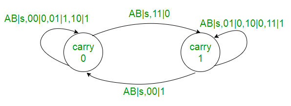
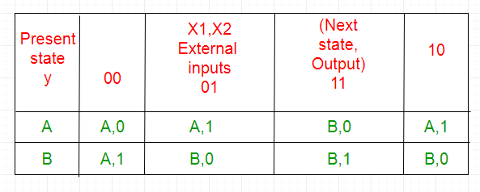
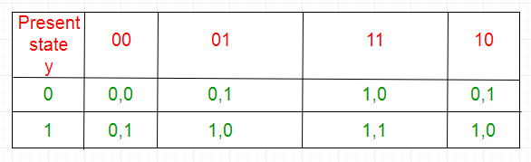
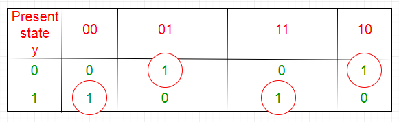
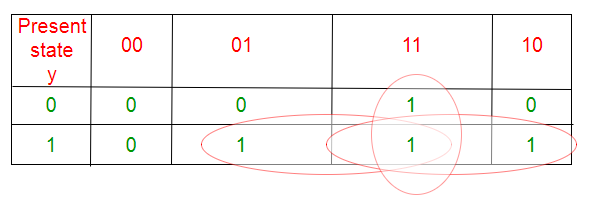

Steps to solve a problem:
1. Draw the state diagram from the problem statement or from the given state table.
Example: Serial Adder.
The functioning of serial adder can be depicted by the following state diagram. X1 and X2 are inputs, A and B are states representing carry.

2. Draw the state table. If there is any redundant state then reduce the state table.

3. Select state assignment i.e. assign binary numbers to the states according to total number states. Also decide the memory element (flip-flops) for the circuit.
A -> 0
B -> 1
4. Replace the assignments in the state table to obtain Transition table:

5. Separate the output table from the transition table.

z = x1x’2y+x’1x2y’+x1x2y+x1x’2y’
6. Excitation table for the flip-flop is obtained from the transition table using the output of flip-flop.
Excitation table for D flip-flop:

D = x1 x2 +x1 y+x2 y
7. Draw the circuit diagram using gates and flip-flops.